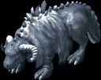

UO Outlands 中文资料库
首页
技能详解
元素精通
宠物图鉴
可驯服宠物
宠物技能大全
宠物天赋模拟器
官方原文：
wiki.uooutlands.com/Arctic Bullvore
Arctic Bullvore
可驯服生物
类型
辅助 Utility
· 战斗
近战 Melee
· 控制栏位
3

生物形象
Creature
基础属性
Stats
属性
Attribute
数值
Value
最低驯服技能要求
Minimum Taming
100
生命
Hits
500
近战伤害
Melee Damage
42–56
攻击速度
Attack Speed
快
Fast
刷新地点
Spawn Location
Cavernam
技能
Abilities
冷却技能
Cooldown
Chilled Charge
被动技能
Passive
Chill Touch
天赋技能
Innate
Mule
← 返回可驯服生物目录